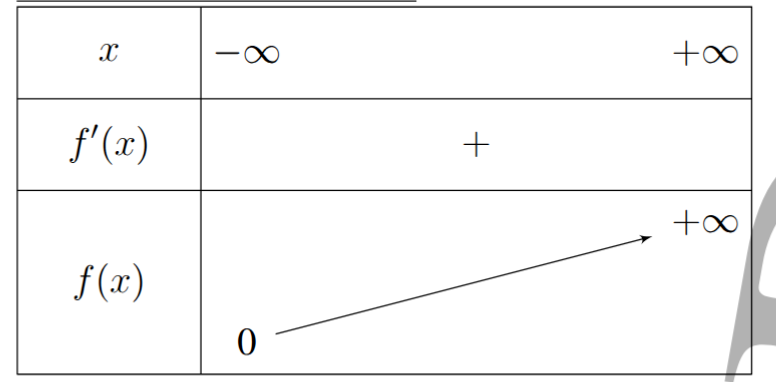
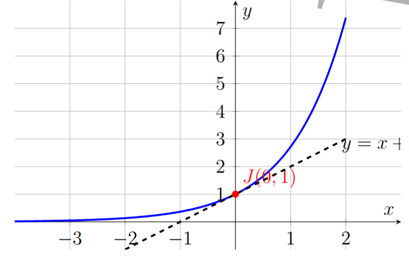

Au XVIIe siècle, les mathématiciens cherchent à résoudre des problèmes de plus en plus complexes liés notamment à l’astronomie, à la physique et aux calculs financiers. Parmi les outils développés à cette époque figurent les logarithmes de Neper, qui permettent de transformer les multiplications difficiles en additions plus simples.
Cependant, l’étude des logarithmes fait apparaître naturellement une nouvelle question : quelle fonction permet de retrouver un nombre à partir de son logarithme ? Cette recherche conduit progressivement à la notion de fonction exponentielle.
Le terme « exponentielle » vient du mot « exposant », car cette fonction est liée à l’étude des puissances dont l’exposant varie. Les travaux de nombreux mathématiciens, notamment ceux de Leonhard Euler (1707 ; 1783), permettent de formaliser cette notion et d’en établir les propriétés fondamentales.
La fonction exponentielle occupe aujourd’hui une place essentielle dans les sciences. Elle intervient dans l’étude de la croissance des populations, des phénomènes radioactifs, des intérêts composés, de la propagation des épidémies ou encore dans de nombreux modèles physiques.
Elle constitue ainsi un outil indispensable pour représenter des phénomènes où une grandeur évolue proportionnellement à sa valeur présente. Dans ce chapitre, nous découvrirons la fonction exponentielle, ses propriétés, son comportement et ses principales applications.
La fonction logarithme népérien \( \ln \) est continue et strictement croissante sur \( ]0;+\infty[ \). Elle réalise donc une bijection de \( ]0;+\infty[ \) sur \( \mathbb{R} \).
Elle admet alors une fonction réciproque, notée \( \exp \), appelée fonction exponentielle. Cette fonction est définie sur \( \mathbb{R} \) et à valeurs dans \( ]0;+\infty[ \).
On note :
\(\displaystyle \forall x\in\mathbb{R},\qquad \exp(x)=e^x. \)
Par définition, pour tout réel \(x\) et tout réel strictement positif \(y\),
\(\displaystyle e^x=y \quad\Longleftrightarrow\quad x=\ln(y). \)
\(\displaystyle D_{e^x}=\mathbb{R} \qquad\text{et}\qquad \mathrm{Im}(e^x)=]0;+\infty[. \)
En particulier,
\(\displaystyle \forall x\in\mathbb{R},\qquad e^x>0. \)
Pour tout réel \(x\) et tout réel \(a>0\),
\( \displaystyle e^{\ln(a)}=a \)
et
\( \ln(e^x)=x. \)
La fonction exponentielle est continue et strictement croissante sur \( \mathbb{R} \).
\(\displaystyle e^0=1 \qquad;\qquad e^1=e\simeq2,718. \)
La fonction exponentielle est continue et strictement croissante sur \( \mathbb{R} \).
Par conséquent,
\(\displaystyle a < b \Longrightarrow e^{a} < e^{b} \)
Pour tous réels \(a\) et \(b\),
\(\displaystyle e^{a+b}=e^a\times e^b. \)
Cette propriété permet d'établir les égalités suivantes.
Pour tous réels \(a\), \(b\) et \(r\),
Comme la fonction exponentielle est strictement croissante,
\(\displaystyle e^a=e^b \Longleftrightarrow a=b, \)
et
\(\displaystyle e^a < e^b \Longleftrightarrow a < b. \)
Preuve de quelques limites
Calculer les limites suivantes :
Propriété
Soit \(u\) une fonction définie sur un intervalle \(I\).
Méthode
Pour calculer une limite contenant une exponentielle composée :
Exemple
Calculer la limite suivante : \(\displaystyle\lim\limits_{x\to+\infty} e^{-3x+5}\).
Solution
On commence par calculer la limite de l'exposant : \(\displaystyle\lim\limits_{x\to+\infty} (-3x+5) = -\infty\).
Or, \(\displaystyle\lim\limits_{t\to-\infty} e^t = 0\).
En posant \(t = -3x+5\), on obtient :
\( \lim\limits_{x\to+\infty} e^{-3x+5} = 0 \)Calculer les limites suivantes :
Ces cinq exemples couvrent les trois situations classiques : un exposant qui tend vers \(+\infty\), vers \(-\infty\) ou vers une limite réelle finie.
Lorsqu'une variable \(x\) tend vers \(+\infty\), certaines fonctions croissent beaucoup plus rapidement que d'autres.
On dit qu'une fonction \(f\) a une croissance plus rapide qu'une fonction \(g\) lorsque le quotient \(\displaystyle \frac{f(x)}{g(x)}\) tend vers \(+\infty\).
La comparaison des fonctions usuelles conduit aux résultats suivants : \( \ln x \ll x^\alpha \ll e^x \)
où \(\alpha\) est un réel strictement positif.
Cela signifie que :
Soit \(\alpha > 0\). On a :
\( \lim\limits_{x\to+\infty} \frac{\ln x}{x^\alpha} = 0 \)Autrement dit : \(\ln x\) croît moins rapidement que \(x^\alpha\).
On a également :
\( \lim\limits_{x\to 0^+} x^\alpha \ln x = 0 \)Soit \(\alpha > 0\). Alors :
\( \lim\limits_{x\to+\infty} \frac{x^\alpha}{e^x} = 0 \)Ainsi : \(x^\alpha\) croît moins rapidement que \(e^x\).
Lorsque \(x \to +\infty\), \(\ln x \ll x^\alpha \ll e^x\)
Propriété
Soit \(u\) une fonction dérivable sur un intervalle \(I\).
Alors la fonction \(x \longmapsto e^{u(x)}\) est dérivable sur \(I\) et :
\( \left(e^{u(x)}\right)' = u'(x)e^{u(x)} \)Notation
La composée \(\exp \circ u\) est généralement notée \(e^u\).
Sa dérivée est donc :
\( (e^u)' = u'e^u \)Exemples
Soit \(f\) la fonction définie sur \(\mathbb{R}\) par \( f(x)=e^x \)
En \(-\infty\) :
\(\displaystyle \lim\limits_{x\to-\infty} e^x = 0\)
En \(+\infty\) :
\(\displaystyle \lim\limits_{x\to+\infty} e^x = +\infty\)
La fonction \(f\) est dérivable sur \(\mathbb{R}\) et :
\(f'(x) = e^x\)
Or,
\(\forall x \in \mathbb{R}, \qquad e^x > 0\)
Par conséquent :
\(\text{La fonction } f \text{ est strictement croissante sur } \mathbb{R}.\)

La courbe représentative de la fonction exponentielle passe par le point \(J(0;1)\), car \(e^0 = 1\).
La tangente à la courbe au point \(J\) a pour équation \(y = x + 1\).
La courbe \(\mathcal{C}_f\) est située au-dessus de cette tangente. Ainsi :
\(\forall x \in \mathbb{R}, \quad e^x \ge x + 1\)
L'égalité est obtenue uniquement pour \(x = 0\).

Pour résoudre une équation contenant une exponentielle, on utilise généralement l'une des propriétés suivantes :
Exemple
Résoudre dans \(\mathbb{R}\) les équations suivantes :
Méthode :
Dans un système contenant des exponentielles, on pose souvent :
\( X = e^x \quad \text{et} \quad Y = e^y, \)avec :
\( X > 0, \qquad Y > 0. \)Le système devient alors un système algébrique classique.
Exemples :
Résoudre les systèmes suivants :
Méthode :
Pour résoudre une inéquation exponentielle, on utilise le fait que la fonction exponentielle est strictement croissante :
\( e^a < e^b \Longleftrightarrow a < b \)
\( e^a \le e^b \Longleftrightarrow a \le b \)
Lorsque l'inéquation est polynomiale en \(e^x\), on effectue le changement de variable :
\( X = e^x \qquad (X > 0) \)
Exemples :
Résoudre dans \(\mathbb{R}\) les inéquations suivantes :